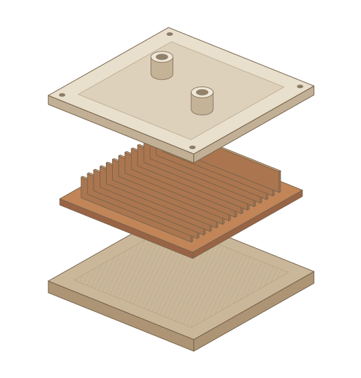

AI-assisted cooling research
Orbital Industries, 2026
I helped build and improve a test system for two-phase cooling research. My work connects the rig, prototype fabrication, and experimental data so we can take ideas through to physical testing.
I also developed an AI-assisted cold-plate design workflow and took generated lid designs through fabrication and testing.
More about the research
I worked with the team on changes to the rig, test procedures, and the contact surfaces that affect our measurements. Getting those details right helps us understand whether a design change actually improved cooling.
The design workflow used experimental data and basic physics models to propose new lids. We tested the resulting parts, and another engineer built on the workflow. The generated designs hadn’t outperformed our best existing lid at that stage, but we had a working path from an AI-assisted proposal to a physical experiment.